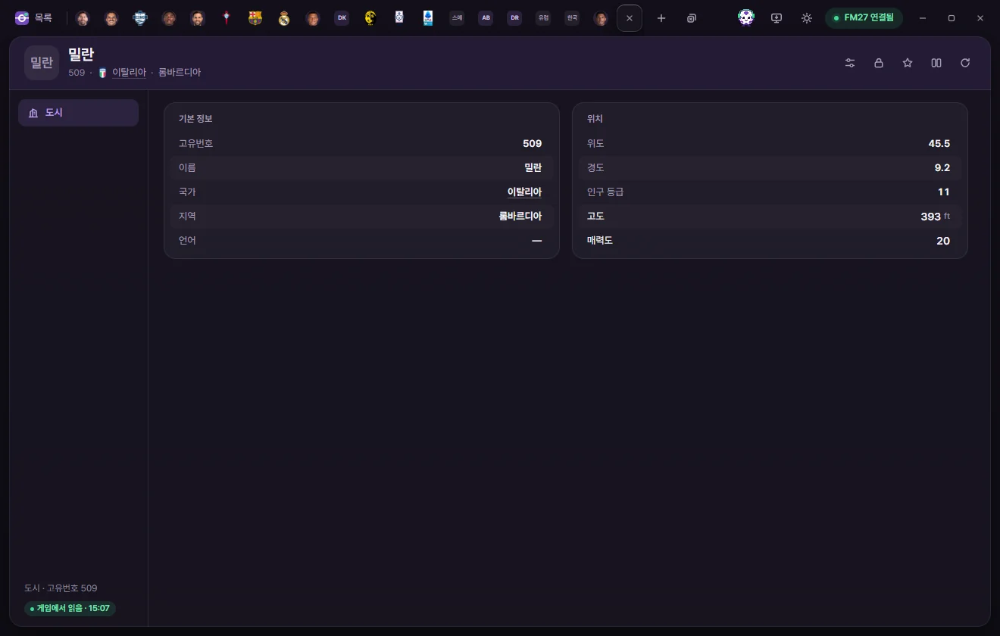
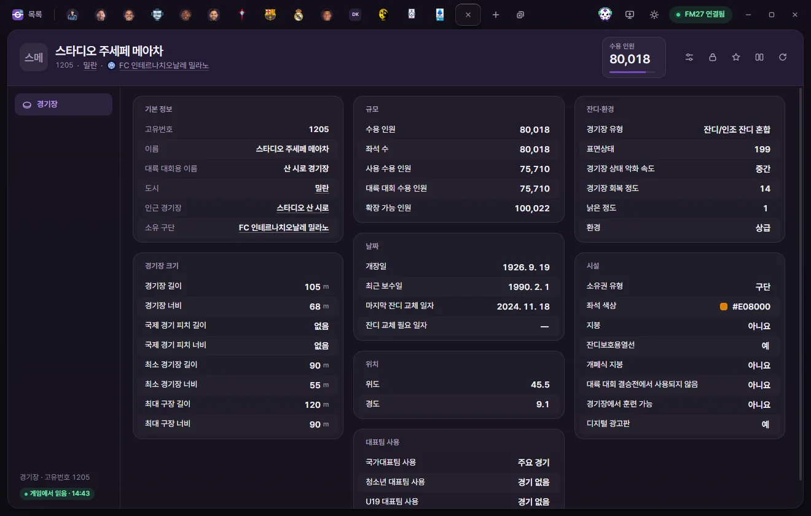

편집 탭
도시·경기장
도시의 고도와 매력도, 경기장의 규모·피치 크기·잔디·시설·대표팀 사용을 고치는 방법입니다.
도시 탭과 경기장 탭은 페이지가 하나씩입니다. 값 고치기와 저장은 선수 탭과 같습니다. 선수 페이지의 공통 설명
두 탭 모두 머리 오른쪽 단추는 프리셋, 고정, 즐겨찾기, 비교, 게임에서 다시 읽기입니다. ⚡ 단추는 없습니다. 선수 탭 머리
도시


여는 법
도시 목록에서 이름을 누릅니다. 선수의 출생 도시, 구단의 연고 도시, 국가의 수도, 경기장의 도시처럼 밑줄로 보이는 도시 이름을 눌러도 열립니다.
탭 머리
이름 아래에 고유번호, 국가, 지역이 보입니다. 숫자 카드는 없습니다.
도시 페이지
| 묶음 | 칸 | 하는 일 | 고칠 수 있는 범위 |
|---|---|---|---|
| 기본 정보 | 고유번호, 이름, 지역, 언어 | 보기만 | |
| 기본 정보 | 국가 | 누르면 국가 탭이 열립니다 | 보기만 |
| 위치 | 위도, 경도 | 도시의 위치 | 보기만 |
| 위치 | 고도 | 피트(ft) 단위 | 0~20000 |
| 위치 | 인구 등급 | 보기만 | |
| 위치 | 매력도 | 0~20 |
경기장


여는 법
경기장 목록에서 이름을 누릅니다. 구단·팀의 홈 경기장, 국가의 국가 경기장처럼 밑줄로 보이는 경기장 이름을 눌러도 열립니다.
탭 머리
- 이름 아래에 고유번호, 도시, 소유 구단이 보입니다.
- 숫자 카드는 수용 인원(0~25만)입니다. 눌러서 바로 숫자를 칩니다.
기본 정보·날짜·위치
| 칸 | 하는 일 | 고칠 수 있는 범위 |
|---|---|---|
| 고유번호, 이름, 대륙 대회용 이름 | 보기만 | |
| 도시, 인근 경기장, 소유 구단 | 누르면 그 탭이 열립니다 | 보기만 |
| 개장일, 최근 보수일, 마지막 잔디 교체 일자, 잔디 교체 필요 일자 | 날짜 | |
| 위도 | −90~90 | |
| 경도 | −180~180 |
규모
| 칸 | 고칠 수 있는 범위 |
|---|---|
| 수용 인원, 좌석 수, 사용 수용 인원, 대륙 대회 수용 인원, 확장 가능 인원 | 0~25만 |
경기장 크기
모두 미터(m) 단위입니다.
| 칸 | 하는 일 | 고칠 수 있는 범위 |
|---|---|---|
| 경기장 길이, 경기장 너비 | 피치 크기 | 길이 90~120, 너비 45~90 |
| 국제 경기 피치 길이, 너비 | 국제 경기를 치르는 경기장(약 700곳)에만 있습니다. 대부분 105 × 68입니다. 값이 없으면 '없음' | 길이 90~120, 너비 45~90 |
| 최소 경기장 길이, 너비 | 모든 경기장이 90 × 55입니다 | 길이 90~120, 너비 45~90 |
| 최대 구장 길이, 너비 | 길이 90~120, 너비 45~90 |
잔디·환경
| 칸 | 하는 일 | 고칠 수 있는 범위 |
|---|---|---|
| 경기장 유형 | 잔디, 인조잔디(부드러움·뻣뻣함), 자갈, 흙, 모래, 잔디/인조 잔디 혼합 등 | 선택지 |
| 표면상태 | 200이 가장 많고 가장 좋은 상태로 보입니다. 게임의 정확한 범위는 확인하지 않았습니다 | 0~200 |
| 경기장 상태 악화 속도 | 빠름, 중간, 느림 | 선택지 |
| 경기장 회복 정도 | 0~20 | |
| 낡은 정도 | 0~20 | |
| 환경 | 설정 안 됨, 기본, 표준, 상급, 최첨단 | 선택지 |
시설
| 칸 | 하는 일 | 고칠 수 있는 범위 |
|---|---|---|
| 소유권 유형 | 구단, 지방 자치 단체, 개인, 구단주, 팬 | 선택지 |
| 좌석 색상 | 누르면 색 고르기 창이 열립니다 | 색 |
| 지붕, 잔디보호용열선, 개폐식 지붕 | 예, 아니요 | |
| 대륙 대회 결승전에서 사용되지 않음 | 예, 아니요 | |
| 경기장에서 훈련 가능, 디지털 광고판 | 예, 아니요 |
대표팀 사용
| 칸 | 하는 일 | 고칠 수 있는 범위 |
|---|---|---|
| 국가대표팀 사용, 청소년 대표팀 사용, U19 대표팀 사용 | 경기 없음, 모든 경기, 주요 경기, 보통 경기, 소규모 경기, 주요 경기 및 일부 보통 경기, 비주요 경기 및 일부 보통 경기 | 선택지 |
구단의 '홈 경기장 수용 인원'은 구단 탭에서는 보기만 합니다. 수용 인원은 이 경기장 탭에서 고칩니다.